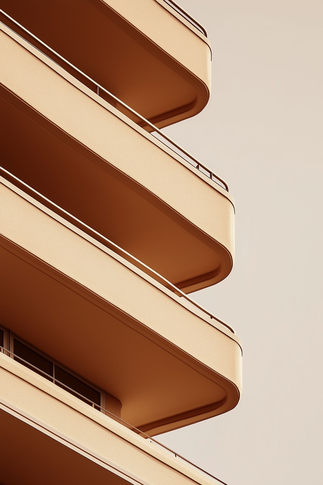
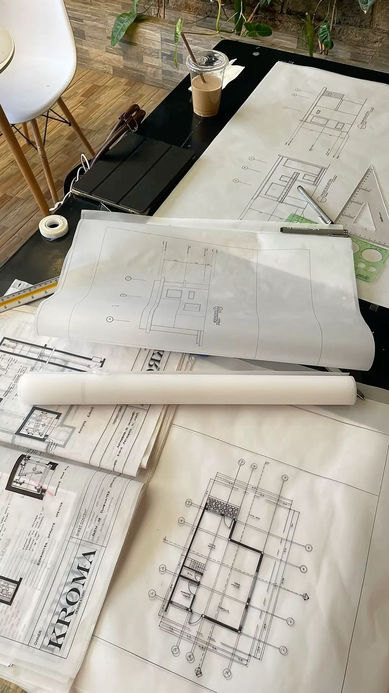
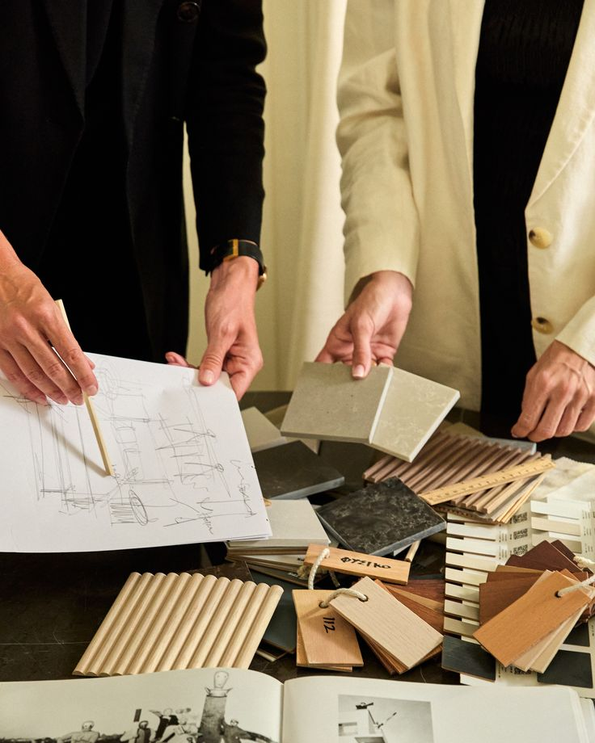

Arquitetura residencial · São Paulo
A Morá cuida de tudo — do conceito à obra entregue.
Você foca em viver o espaço.
7 anos de projetos entregues · Campo Belo, SP

assets/hero.jpgCada projeto é único. O processo é sempre o mesmo.

assets/atelier.jpgDo desenho técnico ao canteiro — cada detalhe definido antes da obra começar.
A maioria dos escritórios entrega o projeto e some. A Morá não. Mariana e Pedro estão no canteiro toda semana — coordenando fornecedores, resolvendo imprevistos, garantindo que o que foi aprovado seja o que vai ser entregue.
Em 7 anos, nenhuma obra atrasou mais de 15 dias.
Nenhuma obra atrasou mais de 15 dias.
Você vê e aprova tudo antes de qualquer execução.
WhatsApp direto com o arquiteto responsável pelo seu projeto.

assets/curadoria.jpgCuradoria própria
Marcenaria, revestimentos, pedras e iluminação. A Morá seleciona e coordena parceiros de confiança — você aprova, a gente cuida do resto.
Quatro etapas. Sem surpresa.
Entendemos o espaço, o estilo e o objetivo. Sem compromisso.
Planta, ambientação 3D e todos os detalhes aprovados antes de qualquer execução.
A Morá seleciona e coordena marceneiros, revestimentos e parceiros de confiança — sem você precisar gerenciar nada.
Visitas semanais, relatório e WhatsApp direto até a entrega.
Vamos conversar
Uma conversa de 30 minutos já dá para entender
se faz sentido trabalharmos juntos.